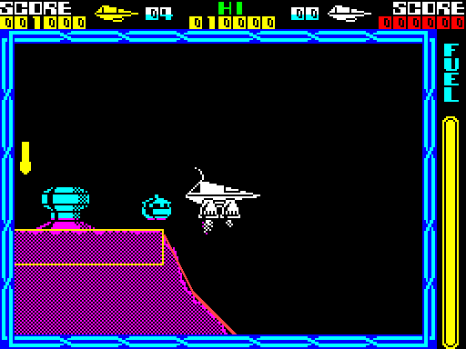
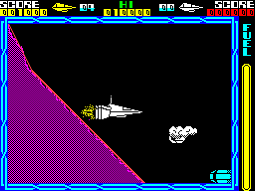

| Collision with the landscape |
The ship bounces off hillsides, the attackers slide down slopes and the lasers stop at the ground, and all of it comes from boxes. While a cell is first drawn, each piece also writes a 5-byte box into that cell's list; a moving thing's box is placed where its speed would take it, cut into the parts that lie in each cell, and tested against those cells' boxes. Floors, ceilings and walls reverse and halve the speed into them; slopes reflect it.
Each of the four cells on the screen has a list of 37 bytes: a count, then up to seven boxes, one per piece of the cell's tile -- loader_entry for the view's cell (over the loader's entry, dead once the game runs), ground_cell_bottom_left below it, ground_cell_top_right to its right and ground_cell_bottom_right below and right; empty_box_list is an empty list for a cell off the screen. draw_landscape writes the count every pass, but the boxes only while record_ground is set: when scroll_landscape has wrapped into a new cell this pass, or while the screen is built after a restart. A box, in the page's coordinates (y counting down, a block spanning its height upwards from its bottom line):
| Offset | Flat piece | Wall | Slope |
|---|---|---|---|
| +0 | x | x (16 less for direction 15) | x of one end (a slope running left starts a step further right) |
| +1 | bottom line: y + 16 for a floor, y for a ceiling | y | that end's y |
| +2 | width: 24 a step | $18 | x of the far end |
| +3 | height: 20 | 16 a step | y of the far end |
| +4 | class | class | class |
The class is piece_classes's byte for the piece's direction: bits 0-1 the slope's steepness (1 gentle, 2 45 degrees, 3 steep), bit 2 a flat floor, bit 3 a flat ceiling, bits 4 and 5 the two walls, bit 6 a slope climbing left, bit 7 a ceiling slope. Any of bits 2-5 makes a block; none, a slope. Read from the game:
| Direction | Piece | Class | Tested as |
|---|---|---|---|
| 0 | flat floor | $04 | floor |
| 1 | gentle slope, climbing right | $01 | slope |
| 2 | 45 degrees, climbing right | $02 | slope |
| 3 | steep, climbing right | $03 | slope |
| 4 | gentle slope, climbing left | $41 | slope |
| 5 | 45 degrees, climbing left | $42 | slope |
| 6 | steep, climbing left | $43 | slope |
| 7 | flat ceiling | $08 | ceiling |
| 8 | gentle ceiling, climbing right | $81 | slope |
| 9 | 45-degree ceiling, climbing right | $82 | slope |
| 10 | steep ceiling, climbing right | $83 | slope |
| 11 | gentle ceiling, climbing left | $C1 | slope |
| 12 | 45-degree ceiling, climbing left | $C2 | slope |
| 13 | steep ceiling, climbing left | $C3 | slope |
| 14 | wall, stepping right | $10 | wall |
| 15 | wall, stepping left | $20 | wall |
The terrace scene from the landscape page, stopped after draw_landscape has run, and the four lists read out of the game's memory; each box is drawn where the view puts it on the screen (floor, ceiling, wall, slope), clipped to the play area:

The terrace scene with its collision boxes.
| Cell | Box at | Bytes | Kind | In the page |
|---|---|---|---|---|
| the view's cell | $5B81 | $08 $A7 $90 $14 $04 | floor | x $08, 144 wide; 20 lines up from line $A7 |
| the view's cell | $5B86 | $A8 $B7 $98 $97 $43 | slope | x $A8 to $98, line $B7 to $97 |
| the cell below | $5BA6 | $E8 $57 $A8 $17 $42 | slope | x $E8 to $A8, line $57 to $17 |
| the cell below and right | $5BF0 | $48 $B7 $28 $77 $43 | slope | x $48 to $28, line $B7 to $77 |
| the cell below and right | $5BF5 | $28 $77 $08 $57 $42 | slope | x $28 to $08, line $77 to $57 |
A floor's box is a 20-line slab whose top is the surface's top line, and a slope's is the line from one end of its run of steps to the other, which the test turns into a staircase by the slope's steepness. The long slope west of the start, flown to the same way:

The long slope west of the start, with its boxes.
collide_with_landscape is given a record in IX, a width in C, a height in B and who is testing in piece_step_x ($FF the ship, $80 a shot's probe or an object that explodes, 0 an object that bounces). place_collision_box places the record's box where this pass's speed would take it (move_across, move_down, without storing it), finds the cell's list (find_page_boxes), and cuts the box into the parts inside each cell: placed by its bottom-left corner, it can stick out only to the right and above, so there are 1, 2 or 4 parts. Each part is tested against its own cell's boxes (next_part_boxes, next_box, next_part): a block by hit_block, a slope by hit_slope. Every overlap test, here and for every sprite contact in the game, is boxes_overlap: a handful of 8-bit compares, at most seven boxes a cell and four parts, 28 a pass. piece_ceiling keeps what has happened this pass: bit 7 a block hit (no more blocks tested), bit 6 a bounce (no more boxes at all), bit 4 a slope hit (no more slopes).
The ship's box is 48 pixels wide and its picture's height plus 4; the shots' probes are 24 by 12 (24 by 16 for the special beam); the objects' boxes go by type (34 by 35 for an attacker, 48 by 32 for a cloud).
hit_block tests a block only if the record is moving into it or still: a floor while it falls, a ceiling while it rises, a wall by the way it moves across. On a hit the speed into it is negated, halved (halve_hl), clamped to whole parts -3 to +2 (clamp_object_speed) and put through a dead band (dead_band: anything from -$A8 to +$63 in 256ths becomes 0). Still moving, it is a bounce; the ship's new speed sets this pass's step at once (move_ship) with a bump (sound_crackle).
Worked example: at the start of a game the ship thrust up for 12 passes and then left to fall onto the plain, the simulator stopped at $C3C5 and $C3C8 in ship_pass every pass. The climb speed (up positive, in units of 2 pixels a pass) gains a quarter downwards a pass from gravity until the ship meets the floor's box; then it comes back up at half the speed, and the bounces die away until one falls inside the dead band and the ship sits still:
| Pass | Climb speed before | After | Events | |
|---|---|---|---|---|
| 16 | -2.500 | -2.500 | $00 | |
| 17 | -2.750 | -2.750 | $00 | |
| 18 | -3.000 | +1.500 | $C0 | bounce |
| 19 | +1.250 | +1.250 | $00 | |
| 44 | +0.289 | +0.289 | $00 | |
| 45 | -0.309 | -0.309 | $00 | |
| 46 | -0.758 | +0.000 | $80 | a block hit, the speed in the dead band: stopped |
| 47 | -0.523 | +0.000 | $80 | a block hit, the speed in the dead band: stopped |
Pass 18: -3.000 became +1.500, minus half. Between the bounces other things nudged the ship (a touch from an attacker pushes it), which is why the later bounces are not neat halves.
One slope a pass. test_landscape_piece tests the part against the slope's shape by class bits 6 and 7 -- as stored, mirrored (test_slope_reversed, test_slope_swapped), upside down (test_slope_upside_down) or both (test_slope_both_ways) -- and test_slope finds how far the part reaches under the slope's edge, scaled by the steepness, into touch_depth. Then, with U the speed across (left positive) and V up and down (up positive), the speeds are reflected:
| Slope | Routine | New U | New V |
|---|---|---|---|
| 45 degrees, climbing right | bounce_45_negate | -V | -U |
| 45 degrees, climbing left | bounce_45_swap_only | V | U |
| gentle, climbing right | bounce_shallow_negate | 3/8 U - 3/8 V | -3/4 V - 3/4 U |
| gentle, climbing left | bounce_shallow | 3/8 U + 3/8 V | -3/4 V + 3/4 U |
| steep | the same two | the gentle rule with U and V swapped before and after (swap_speeds) |
The 45-degree rows are exact reflections off the lines y = x and y = -x; the others' cross terms go through slope_negate, which negates the whole word for a ceiling or steep slope and only the whole part otherwise, so they are approximate. Every factor is under 1: every slope bounce loses speed. The negations are switched on and off by two JRs whose displacements each routine patches. After a slope (leave_slope) an object is pushed out by the depth and may slide downhill (downhill); the ship (ship_on_slope_response) stops scrolling for the pass, and on its second pass in a row on a slope (ship_on_slope) slides 2 pixels downhill.
Worked example: the flight to the long slope west of the start, then 24 passes holding left into it, the speeds read either side of the test (the speed across is kept in the scroll's sense, so steering left is positive):
| Pass | Across before | Up before | Across after | Up after | Events | On the slope |
|---|---|---|---|---|---|---|
| 0 | +2.000 | +1.668 | +2.000 | +1.668 | $00 | |
| 1 | +2.250 | +1.418 | +2.250 | +1.418 | $00 | |
| 2 | +2.500 | +1.168 | +2.500 | +1.168 | $00 | |
| 3 | +2.750 | +0.918 | +2.750 | +0.918 | $00 | |
| 4 | +2.000 | +0.668 | +2.000 | +0.668 | $00 | |
| 5 | +2.250 | +0.418 | +0.418 | +2.250 | $10 | yes |
| 6 | +0.668 | +1.000 | +0.668 | +1.000 | $00 | |
| 7 | +0.918 | +0.750 | +0.918 | +0.750 | $00 | |
| 8 | +1.168 | +0.500 | +1.168 | +0.500 | $00 | |
| 9 | +1.418 | +0.250 | +1.418 | +0.250 | $00 | |
| 10 | +1.668 | +0.000 | +0.000 | +1.668 | $10 | yes |
| 11 | +0.250 | +1.418 | +0.250 | +1.418 | $00 | |
| 12 | +0.500 | +1.168 | +0.500 | +1.168 | $00 | |
| 13 | +0.750 | +0.918 | +0.750 | +0.918 | $00 | |
| 14 | +1.000 | +0.668 | +1.000 | +0.668 | $00 | |
| 15 | +1.250 | +0.418 | +1.250 | +0.418 | $00 |
Pass 5: the ship touched the slope, a 45-degree one climbing left (class $42), and the two speeds were swapped, +2.250 across and +0.418 up becoming +0.418 and +2.250, as bounce_45_swap_only says; steering left builds the speed across up again until the next touch. (The listing's sessions never ran this rule; it ran here.)
A bounce off the landscape changes the speeds before anything is drawn: ship_pass works out the scroll from them, so the ship never visibly enters the ground.